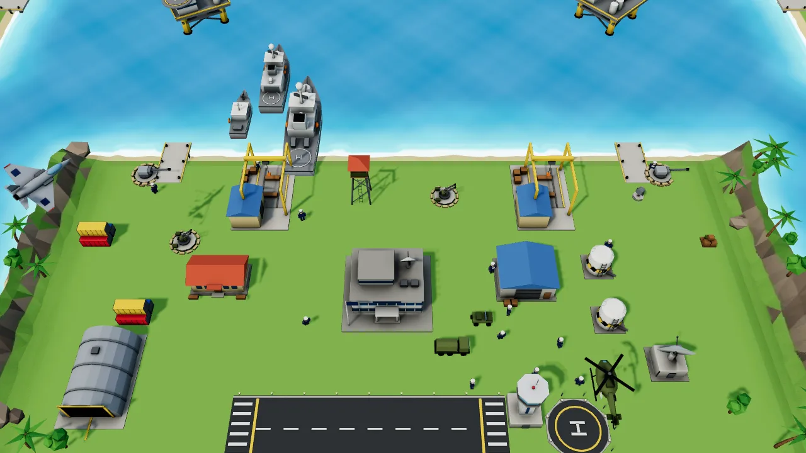

Small worlds, built with care
Lowpoly Harbor is a new independent games studio making bright, toy-sized strategy games you can play right in your browser.
Setting sail
Every studio starts somewhere. Ours starts at the water's edge: a few islands, a handful of boats, and the question of what happens when everyone wants the same stretch of sea.
Lowpoly Harbor makes small games with a crafted look. Chunky low-poly models, warm baked light and simple rules that grow into stories: alliances that sour, a rig that changes hands three times, a last stand on a beach.
We're just starting out, and we're building in the open. Our first game, Strait Command, is out now on itch.io. Play it, break it, and tell us what you'd change. That's how the next one gets better.

Strait Command
Four island nations, one sea. Build a naval base, crew your fleet, and choose your allies carefully, because they won't always stay that way.